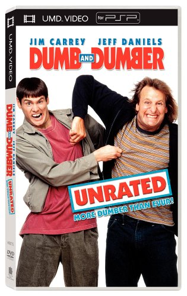
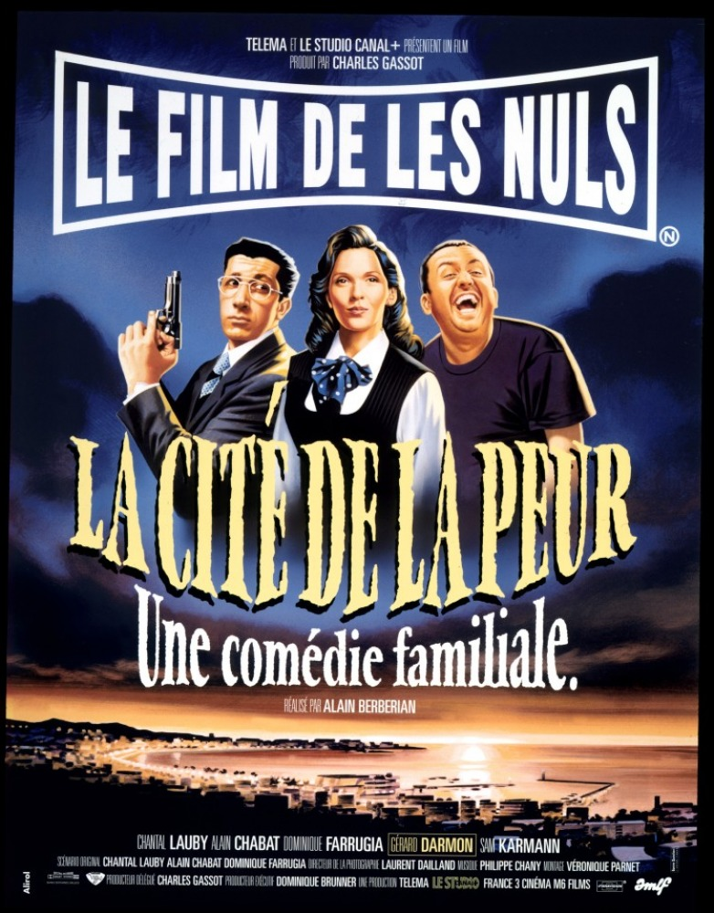
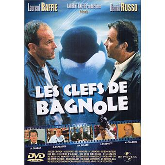

After a few years, I decided that being web-ignorant was too much Let's do some web stuff.
See for yourself|  |
1994 - Dumb and DumberThough dim-witted, Harry is slightly more intelligent than Lloyd and can be said to be the "Dumb" of the title to Lloyd's "Dumber". A wealthy but troubled heiress whose husband Bobby has been kidnapped. A henchman for Nicholas Andre. He has a stomach ulcer and regularly takes medication for it. |
|  |
La cité de la peurOdile Deray, attachée de presse, vient au Festival de Cannes pour présenter le film `Red is Dead'. Malheureusement, celui-ci est d'une telle faiblesse que personne ne souhaite en faire l'écho. |
|  |
Les Clefs de bagnoleIl est difficile de réaliser un bon film. Laurent Baffie l'a compris et emmène Daniel Russo dans une aventure ubuesque et décalée, à la recherche des clefs de bagnole qu'il a perdues. En réalité, ses clefs sont dans sa poche gauche, mais tout cela n'est qu'une allégorie de la vie, de l'amitié et de l'aventure. |